― イベント報告 ―
-
■ARTs of JOMON in DENVER
【期 間】２０１５年９月１日～１１月３０日
【会 場】アメリカ コロラド州 デンバー国際空港 -
■第２１回 秋の縄文野焼き祭り（平成２７年度）
【開催日】２０１５年１０月１１日（日） -
■アメリカでの縄文アート展開
（ARTs of JOMON in DENVER に先駆けて） -
■開館10周年記念 ARTs of JOMON in 新見 －現代縄文アートの世界－
【期 間】２０１５年６月１８日（木）～６月２８日（日）
【会 場】新見市文化交流館まなび広場にいみ小ホール -
■福山で猪風来講演会！
【開催日】２０１５年３月２２日（日）
【会 場】福山市市民参画センター（広島県福山市本町１－３５） -
■東京町田ひなた村に“縄文の炎”たちのぼる
【開催日】２０１５年２月２８日（土）
【会 場】東京都町田市青少年施設ひなた村 -
■ARTs of JOMON in TOKYO
【期 間】２０１５年１月４日（日）～１月１８日（日）
【会 場】東京都港区南青山 表参道Spiral Garden -
■芸術新潮 現代の縄文土器を野で焼く『猪風来の豊饒世界』
【掲載号】「芸術新潮」２０１４年７月号 -
■日本初の快挙！ 国宝「中空土偶」漆塗装技法と縄文ベンガラ技法の解明
―“縄文の赤”の美をはじめて再現―
【函館市縄文文化交流センターの公式ページで論文公開】
【研究成果の公開展示】２０１４年５月２０日（火）～６月８日（日）

|
→【デンバー国際空港公式サイト（Arts of Jomon - DenverInternational）】
【出展作家（50音順）】
猪風来 Ifurai（縄文造形家）
大森準平 Junpei Omori（陶芸家）
大藪 龍二郎 Ryujiro Oyabu（陶芸家）
大山康太郎 Kotaro Ooyama a.k.a.Mon（ライブペインター／DJ）
金理有 Riyoo Kim（陶芸家）
坂巻善徳 a.k.a.sense（美術家）
小林武人 Taketo Kobayashi（3DGGデザイナー）
澁谷忠臣 Tadaomi Shibuya（グラフィックアーティスト）
篠崎裕美子 Yumiko Shinozaki（陶芸家）
竹谷隆之 Takayuki Takeya（フィギュア造形師）
堀江武史 Takeshi Horie（修復家）
片桐仁 Jin Katagiri（俳優、タレント）
丸岡和吾 Kazumichi Maruoka（髑髏作家）
村上原野 Genya Murakami（縄文造形家）
結城幸司 Koji Yuki（版画家・彫刻家）
ARTs of JOMON in 新見に引き続いて、アメリカでの現代縄文アート展の開催。
日本から15名のアーティストによる縄文造形作品などを展示しました。
→【アメリカでの縄文アート展開（ARTs of JOMON in DENVER に先駆けて）】

|
|
| 【山陽新聞 2015.09.18】 | |

|

|

|

|

|
|

|
|

|

|
| 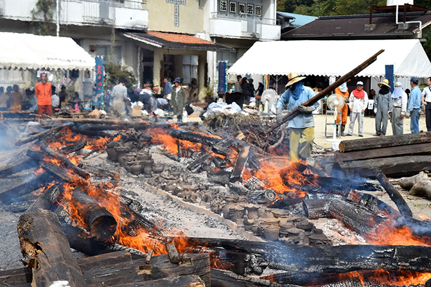 |
開館10周年記念企画「第21回秋の縄文野焼き祭り」を開催しました。
10月11日日曜、低気圧が雲の名残を少しだけなびかせて去り、曇り空の夜明けは次第に青空へと変わりました。
野焼きの神様が微笑んでくれたようです。
７時過ぎに火おこしをして点火。
白い煙がスーッと立ち昇り、祭りのはじまりを告げます。
今年８月には猪風来美術館から館長らふたりが米国でのARTs of JOMON展の準備のため渡米して、縄文アート
を核とした文化交流がなされました。
デンバー国際空港で11月末まで開催されるアート展以外にも、ボルダ―市での縄文ワークショップやネイ
ティブアメリカンのホピ族野焼き体験などを通し、縄文アートが海外でも高い評価と関心をももって受け止め
られることを実感。
そして縄文造形と縄文野焼きへの強い共感。
縄文野焼きの「人類の文化の根源」という普遍性は、現代への警鐘や未来への希望の源泉となることを予感し
ています。
=∴=∵=∴=∵=∴=∵=∴=∵=∴=∵=∴=∵=∴=∵=∴=∵=∴=∵=∴=∵=∴=∵=∴=∵=∴=∵=∴=
今回焼き上げる作品は200点以上。
例年をはるかに越える点数です。
陶芸教室生を中心に、地元小学校の支会活動や、法曽焼同好会などで作られた作品を並べます。
まずは長く設置した野炉のまわりで作品をあぶり焼き。
みごとな縄文造形の土器や可愛らしい土偶鈴、ユニークな縄文風ペッカリーから独創的なオブジェまで。
秋の日差しの中で火にあぶられ、熱い風に身をゆだねて皆気持ち良さそうです。
| 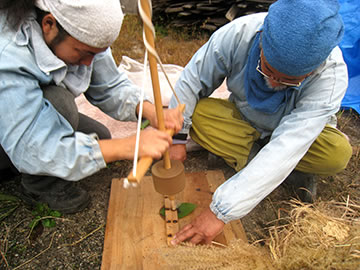 | 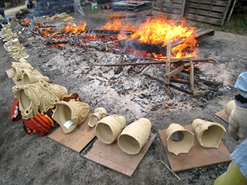 |

|

|
丸太や材木をきらさずに焚き続けます。
徐々に大きくなる火勢に、刻々と色を変化させてゆく作品たち。
火のエネルギーが作品の中へとしだいに蓄えられて、焼き上がる瞬間を待っています。
スタッフも汗だくになりながら、必死で火の中へ飛び込んでゆきます。
本当に命がけの踏ん張りで渾身の作業。
最大のクライマックスにさしかかると炎が龍のように立ちのぼり、まるで生まれ出ようとする作品の産声が
渦巻くようです。
| 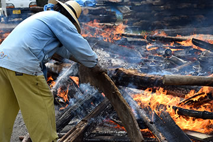 |

|
| 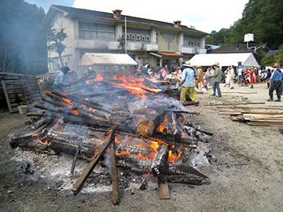 | 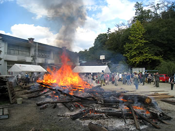 |

|
|
やがて炎が穏やかにおさまってくると、焼き上がった作品がしだいに姿を現します。
火のパワーが新しい命を宿した作品の誕生の瞬間！
今回は岡山・倉敷・総社など岡山県内のみならず、遠く東京や岐阜、京都、大阪、広島、香川など、縄文に
惹かれた人たちが200人以上参加してくれました。
急遽野焼きスタッフに加わって協力してくださった方々もおり、たいへん力になりました。
縄文三昧のとても濃密な一日でした。
| 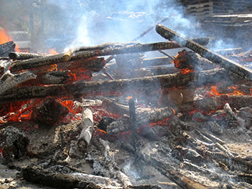 | 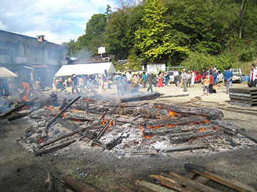 |
| 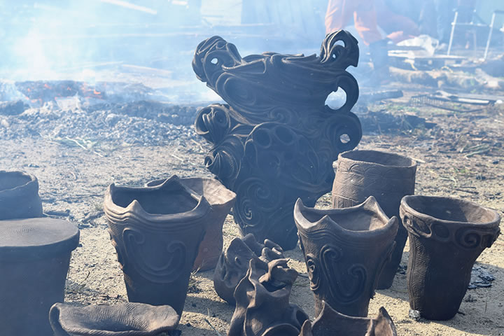 | |
=∴=∵=∴=∵=∴=∵=∴=∵=∴=∵=∴=∵=∴=∵=∴=∵=∴=∵=∴=∵=∴=∵=∴=∵=∴=∵=∴=
《縄文野焼き大賞》

|

|
焼き上がった作品の中から、特に縄文造形の素晴らしさや独創性に優れたもの、また縄文の心あふれる作品
を対象に「縄文野焼き大賞」など４賞を選考・表彰いたしました。
受賞作は11月末まで当館に展示いたします。
○縄文野焼き大賞
縄文土偶 赤木 健志(あかぎ たけし) 高梁市
○縄文野焼き新見市教育長賞
縄文ペッカリー 西川 明里(にしかわ あかり) 草間台小５年
○縄文野焼き法曽焼同好会会長賞
縄文土器 内山 大志(うちやま たいし) 三重県桑名市
○縄文野焼き猪風来美術館館長賞
縄文土器 小野 真由美(おの まゆみ) 岡山市

|
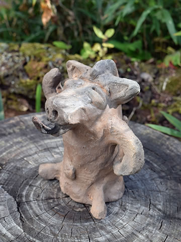 |
| 【縄文野焼き大賞】縄文土偶 | 【縄文野焼き新見市教育長賞】縄文ペッカリー |

|
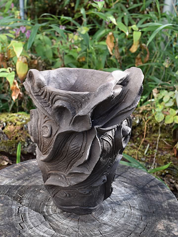 |
| 【縄文野焼き法曽焼同好会会長賞】縄文土器 | 【縄文野焼き猪風来美術館館長賞】縄文土器 |
=∴=∵=∴=∵=∴=∵=∴=∵=∴=∵=∴=∵=∴=∵=∴=∵=∴=∵=∴=∵=∴=∵=∴=∵=∴=∵=∴=
《縄文体験コーナー》
～縄文土器で煮炊き～
土器で煮炊きした汁をみんなで堪能！
底の小さな縄文土器のフォルムは、周りに薪を燃やして煮炊きするのに最適。
土器が熱くなり沸騰すると、薪を足さなくても熱が効率よく保たれて温かいままです。
野菜やキノコ、タカキビのだんごを入れて、縄文汁の完成です。

|

|
～粘土でつくろう・石で勾玉をつくろう～
今日も大盛況！
小さい子供から大人まで粘土に夢中。
縄文文様みたいに渦巻きを施したり、縄目を転がしたり押し付けたり、それぞれの独創が光ります。
これら体験コーナーで作られた作品は11月中に焼き上げる予定です。
白・黒・ピンクの滑石をやすりでこすって勾玉の形にします。
根気のいる作業だけどみな丹念に作業に集中。
天然石なので中からいろんな模様が現れてきます。
勾玉に紐をとおしてペンダントの出来上がりです。

|

|
=∴=∵=∴=∵=∴=∵=∴=∵=∴=∵=∴=∵=∴=∵=∴=∵=∴=∵=∴=∵=∴=∵=∴=∵=∴=∵=∴=
《販売コーナー》
地元法曽焼同好会女性会員の皆さんが大奮闘。
昼食にはうどん・猪カレーうどん・猪カレーライスなどが提供されました。
飲み物・お菓子や地元特産品法曽茶・法曽焼、ピオーネの販売もありました。

|
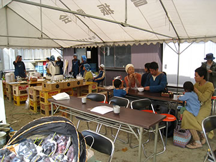 |
=∴=∵=∴=∵=∴=∵=∴=∵=∴=∵=∴=∵=∴=∵=∴=∵=∴=∵=∴=∵=∴=∵=∴=∵=∴=∵=∴=
《縄文の炎 コラボ・パフォーマンス》
秋の空に縄文の炎が燃えさかる前で、おやじバンドV-STAFFや有志の方々による演奏やパフォーマンスが盛大
に繰り広げられました。
エレキギターの音色、打ち鳴らされる縄文太鼓のリズム、インディアンフルートや琴などさまざまな楽器の
奏でる調べ、炎の熱気とともに舞う踊り、たくさんの合いの手と喝采……炎と会場の人たちの心が一体となり、
縄文のうねりとなって法曽の谷間に大きくこだましていました。
出演者と参加者の方々、素敵な時間を本当にありがとうございました。

|
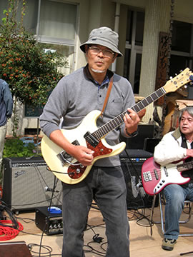 |
| 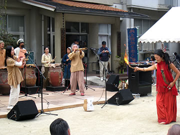 |

|

|
|
=∴=∵=∴=∵=∴=∵=∴=∵=∴=∵=∴=∵=∴=∵=∴=∵=∴=∵=∴=∵=∴=∵=∴=∵=∴=∵=∴=

|

|
| 【第２１回「秋の縄文野焼き祭り」チラシ】 →（表面）PDF版を開く →（裏面）PDF版を開く |

|
今回アメリカでオープンした ARTs of JOMON in DENVER 展に先立ち、関係する縄文アーティスト８名
が渡米して、展示準備のほかコロラド州・アリゾナ州各地で縄文アートのプロジェクトや交流活動を展開し
ました。
【渡米作家（50音順）】
猪風来（縄文造形家）／大薮龍二郎（陶芸家）／大山康太郎 a.k.a. Mon（ライブペインター／DJ）／
小林武人（3DGGデザイナー）／坂巻善徳 a.k.a. sense（美術家）／篠崎裕美子（陶芸家）／
村上原野（縄文造形家）／廣川慶明（フォトグラファー）

|
|
| 【ARTs of JOMON in DENVER 展示準備作業】 | |
|
|
|
| 【山陽新聞 2015.09.18】 | |
=∴=∵=∴=∵=∴=∵=∴=∵=∴=∵=∴=∵=∴=∵=∴=∵=∴=∵=∴=∵=∴=∵=∴=∵=∴=∵=∴=
●縄文ワークショップ
（８月１５日,１６日 コロラド州ボルダー市）
ボルダー・ポッタリー・ラボ（Boulder Pottery Lab）で猪風来、大薮龍二郎、村上原野を講師として
縄文ワークショップを開催。

|
|
| 【ワークショップ見本作品の制作】 | |

|

|
| 【スライドレクチャーと縄文の道具作りワークショップ】 | |

|

|

|
|
| 【縄文造形実践ワークショップ】 | |

|
|
| 【ワークショップ参加者の方々と】 | |
猪風来、大薮龍二郎、村上原野の三人が館内で制作した作品三点を、縄文アート交流のあかしとして、
ボルダー・ポッタリー・ラボ代表のナンシー氏に寄贈しました。

|
|
| 【作品寄贈】 |
=∴=∵=∴=∵=∴=∵=∴=∵=∴=∵=∴=∵=∴=∵=∴=∵=∴=∵=∴=∵=∴=∵=∴=∵=∴=∵=∴=
●ARISE Music Festival
（８月７日～９日 コロラド州ボルダー市）
8000人が集まった音楽フェスティバルの会場ギャラリースペース横にパネルを設営、開催期間中に
sense が壁画をライブペイントを実施。
大薮龍二郎、村上原野がサポートとして参加。

|
|

|

|

|
|
| 【ARISE Music Festival 会場と壁画】 | |
=∴=∵=∴=∵=∴=∵=∴=∵=∴=∵=∴=∵=∴=∵=∴=∵=∴=∵=∴=∵=∴=∵=∴=∵=∴=∵=∴=
●Mural Project
（８月１１日～２２日 コロラド州デンバー市）
デンバー市内のチェリークリーク（Cherry Creek）で sense, Mon が壁画制作を実施。
=∴=∵=∴=∵=∴=∵=∴=∵=∴=∵=∴=∵=∴=∵=∴=∵=∴=∵=∴=∵=∴=∵=∴=∵=∴=∵=∴=
●ギャラリー壁画
（８月１７日～２２日 コロラド州デンバー国際空港）
デンバー国際空港ターミナルギャラリー内に壁画制作を実施。

|
|

|
|
| 【ギャラリー壁画制作】 | |
=∴=∵=∴=∵=∴=∵=∴=∵=∴=∵=∴=∵=∴=∵=∴=∵=∴=∵=∴=∵=∴=∵=∴=∵=∴=∵=∴=
●レセプション
（８月２０日 コロラド州デンバー市）
デンバー市内のＤＯＭＯ（日本料理レストラン）にてデンバー市のアート関係者らを招いた日本の縄文
アーティストとの交流パーティ。
およそ50名が参加。
| 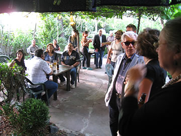 | |

|

|
| 【レセプション】 | |
=∴=∵=∴=∵=∴=∵=∴=∵=∴=∵=∴=∵=∴=∵=∴=∵=∴=∵=∴=∵=∴=∵=∴=∵=∴=∵=∴=
●ホピ探訪
（８月２２日，２３日 アリゾナ州ホピ・メサ）
ホピ族（ネイティブアメリカン）のルーベン氏を訪ね、猪風来、村上原野が縄文とホピの文化交流。
TEWA村で開催されたSocial Danceに参加。
ファースト・メサでホピの陶芸家ドロシー氏によるホピ式野焼きを拝見。
|
ホピのメサ内では写真撮影が禁止されています |
アリゾナ州セドナ市でホピの源流といわれるシワナ族遺跡へ行き、岩絵やボルテックスのメディスン・ホール、
“大地の子宮”などを訪れる。

|
|

|

|
| 【シナワ族の遺跡（岩絵、ボルテックスにて）】 | |
=∴=∵=∴=∵=∴=∵=∴=∵=∴=∵=∴=∵=∴=∵=∴=∵=∴=∵=∴=∵=∴=∵=∴=∵=∴=∵=∴=

|
 |
 |
| 【ARTs of JOMON in 新見 チラシ】 →PDF版を開く |
日本列島に一万五千年前より花開いた縄文文化が、近年世界から注目を集めています。
考古学での成果は縄文の実像を解き明かしつつあるとともに、その芸術としての造形美の存在を世界に知ら
しめています。
この動きは現在、絵画、彫刻、デザイン、陶芸、織物、音楽、映像、演劇、ファッションなどあらゆる領域
へと広がり、今日では縄文アートを志す多くの若き芸術家達が各ジャンルで活躍しています。
すなわち、縄文のスピリットとインスピレーションに感応して創作するアーティスト達の活動が潮流となり、
現代縄文芸術運動がいま大きく飛躍しようとしているのです。
ARTs of JOMON展は全国の主要な現代縄文アーティストが結集し、日本文化の根源である縄文スピリット
にもとづく現代縄文アート作品を展示し、全国―世界に発信するものです。
これまでに各地で展示が好評を博し、このたびメインアーティストの一人である猪風来の地元・新見市での
開催となりました。
現代縄文アートの新しい時代を拓く作家たちの作品をぜび高覧ください。
=∴=∵=∴=∵=∴=∵=∴=∵=∴=∵=∴=∵=∴=∵=∴=∵=∴=∵=∴=∵=∴=∵=∴=∵=∴=∵=∴=
■参加出品 全国の主要な縄文アーティスト（19名）
岡山県内の縄文作家（5名）
■特別展示 片桐仁作品特設コーナー
JOMO-T展（縄文をテーマにデザインしたＴシャツを展示）
メディアアート（縄文の世界観を醸成した映像作品を上映）
■公開制作 ライブペイント（縄文アーティスト3人による絵画）
6月16日（13：00 - 17：00）～17日（10：00 - 17：00）
渋谷忠臣・坂巻善徳 a.k.a sence／さかいひろこ
■オープニングセレモニー・キュレーターによる作品解説
6月18日 9：00 -
■縄文ワークショップ（各先着20名 参加費300円）
6月20日／21日 10：00 - 15：00
黒曜石のアクセサリーづくり（講師：草刈朋子）
縄文土鈴をつくろう！（講師：村上原野）
■主催 新見市・現代縄文アート展実行委員会
■企画制作 猪風来美術館・NPO法人jomonism
=∴=∵=∴=∵=∴=∵=∴=∵=∴=∵=∴=∵=∴=∵=∴=∵=∴=∵=∴=∵=∴=∵=∴=∵=∴=∵=∴=

|
|
| 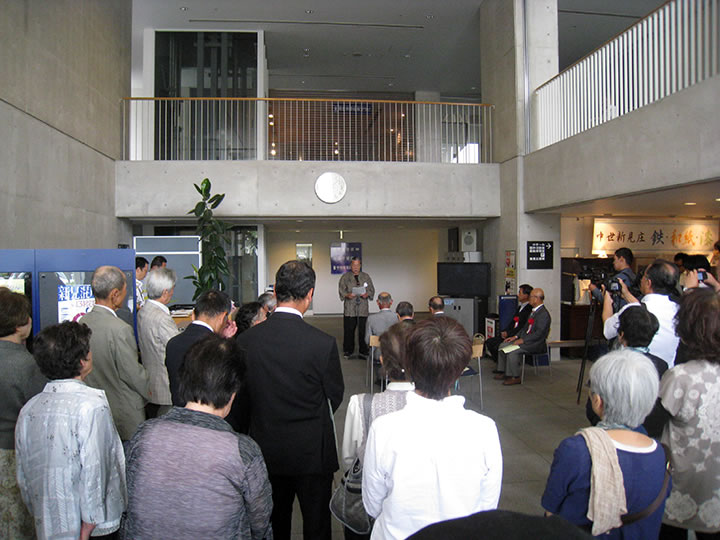 | 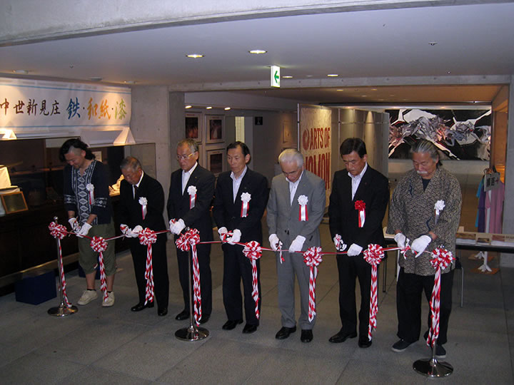 |

|

|

|
|

|
|

|

|

|
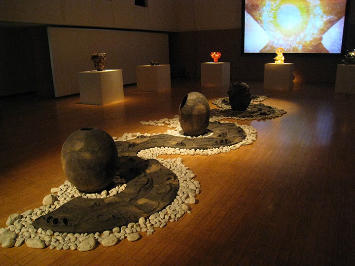 |

|
|

|
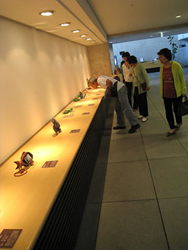 |
| 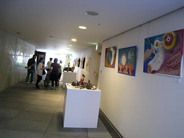 | |
| 【ARTs of JOMON in新見 会場写真】（画像をクリックで拡大します） | |

|

|
| 【ARTs of JOMON in新見 ワークショップ】（画像をクリックで拡大します） | |
=∴=∵=∴=∵=∴=∵=∴=∵=∴=∵=∴=∵=∴=∵=∴=∵=∴=∵=∴=∵=∴=∵=∴=∵=∴=∵=∴=
| 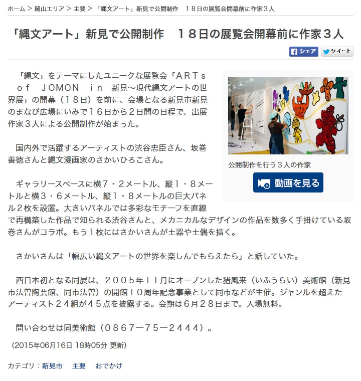 | 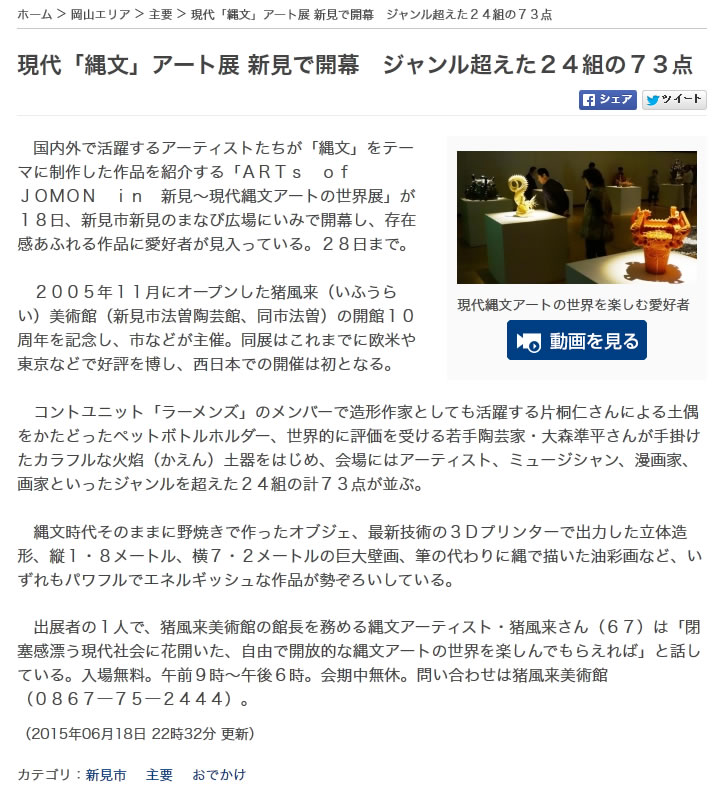 |
| 【山陽新聞 digital 2015.06.16】 （クリックで記事を開きます） |
【山陽新聞 digital 2015.06.18】 （クリックで記事を開きます） |
| 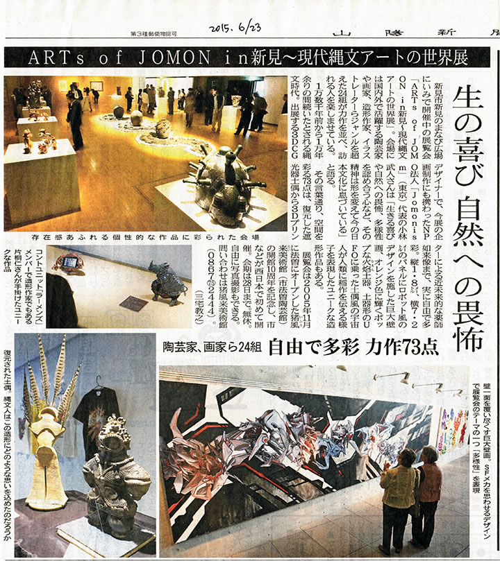 |
| 【山陽新聞 2015.06.23】（画像をクリックで拡大します） |

|
| 【山陽新聞 2015.05.30】（画像をクリックで拡大します） |
=∴=∵=∴=∵=∴=∵=∴=∵=∴=∵=∴=∵=∴=∵=∴=∵=∴=∵=∴=∵=∴=∵=∴=∵=∴=∵=∴=
 |
猪風来の生まれ故郷福山で初の「縄文の心と文化を語る」講演会。
福山には縄文時代中期の有名な遺跡である馬取貝塚（柳津）があります。
また、帝釈馬渡岩陰遺跡からは、縄文時代草創期（約1万5000年前）の土器が出土しており、これは
世界最古級の土器です。
備後の地にも確かに息づいている縄文の魂を呼び覚まし、“縄文の美”について語り合う心と文化の講演
となりました。
=∴=∵=∴=∵=∴=∵=∴=∵=∴=∵=∴=∵=∴=∵=∴=∵=∴=∵=∴=∵=∴=∵=∴=∵=∴=∵=∴=

|

|
| 【猪風来による、福山出土の縄文土器再現製作】 | |
■主催 古代縄文の歴史研究会
■後援 福山市教育委員会・中国新聞備後本社
山陽新聞社・(株)プレスシード
■お問い合わせ先 090-3477-9479

|
 |
| （画像をクリックで拡大します） |
数千年の時空をこえて「縄文スピリットから始まる新しい創造」の炎が、東京の縄文王国・町田の地に
燃え上がりました。
『東京町田・縄文アートフェス』ではメインイベントである「野焼きまつり」をはじめ、縄文シンポジウム
や町田の縄文遺跡を巡るツアー、縄文ワークショップといった縄文づくしの一日でした。
=∴=∵=∴=∵=∴=∵=∴=∵=∴=∵=∴=∵=∴=∵=∴=∵=∴=∵=∴=∵=∴=∵=∴=∵=∴=∵=∴=
野焼きする作品は、2月15日に集まった約40名の方々が制作した縄文土器・土偶の数々。
町田市の出土品を参考に、自由に創作した作品です。
まずは講師・猪風来が縄文造形の意味をはじめ、文様の入れ方や入魂の造形など技法をレクチャー。
そこから皆が各々の創造をふくらませてゆき、見事な縄文の作品をつくりあげました。
このほか、猪風来（猪風来美術館館長）と村上原野（同・陶芸指導員）による町田市出土の再現制作を
した土器・土偶なども一緒に焼き上げます。
=∴=∵=∴=∵=∴=∵=∴=∵=∴=∵=∴=∵=∴=∵=∴=∵=∴=∵=∴=∵=∴=∵=∴=∵=∴=∵=∴=
野焼き当日には北海道のアイヌの方々も駆け付け、猪風来らとともに火と天地の神々に祈りをささげる
縄文野焼きカムイノミをとりおこないました。
炎に向きあっての大自然への祈りの儀は、野焼きと祭事の本質をあらわす象徴的なシーンでもありました。
東京藝術大学の方々も野焼きスタッフとして参加し、たくさんの人たちの力が集結します。
 |
 |
| 【数日前から野焼き場を整備する（野炉焼き）】 | |
 |
 |
| 【火入れ】 | 【カムイノミの儀】 |
| （画像をクリックで拡大します） | |
=∴=∵=∴=∵=∴=∵=∴=∵=∴=∵=∴=∵=∴=∵=∴=∵=∴=∵=∴=∵=∴=∵=∴=∵=∴=∵=∴=
| 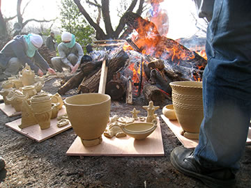 |  |
| 【作品を火の周りに並べる】 | 【徐々に炙ってゆく】 |
 |
 |
| 【作品が熱くなってから炎の中に入れる】 | 【木を積んで炎を大きく育ててゆく】 |
朝7時から野炉の準備をはじめ、9時に火入れとカムイノミ、そこから徐々に炎を大きく育ててゆきます。
皆の制作した作品も火にあぶられて、熱が高まるとともに土色から黒、黒から赤へと次第にその色を変え
てゆきます。
| 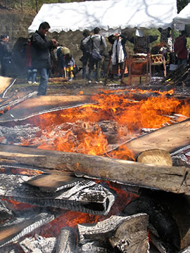 | 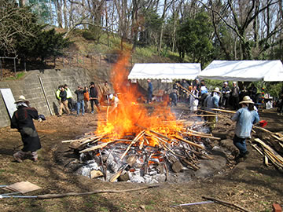 |
| 【器体の色をみながら木を積む】 | 【炎が野炉を包み込むクライマックスへ！】 |
 |
 |
| 【炎の子宮が完成し、炎が大きくたちのぼる】 | 【少しずつ炎がおさまってゆく】 |
 |
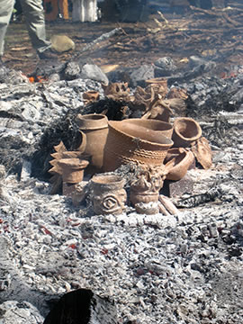 |
| 【焼き上がった作品がその姿を現す】 | |
| （画像をクリックで拡大します） | |
最後に大きな炎が町田の空へとたちのぼり、作品に新たな命が宿ります。
“やきものの原点”の力強さを居あわせたたくさんの人たちが共有した時間でした。
=∴=∵=∴=∵=∴=∵=∴=∵=∴=∵=∴=∵=∴=∵=∴=∵=∴=∵=∴=∵=∴=∵=∴=∵=∴=∵=∴=
同日には縄文シンポジウムとしてひなた村カリヨンホールで小林達雄国学院大学名誉教授、町田市の
川口正幸学芸員らによる講演や、大薮龍二郎、小林武人によるアーティトトークも行われ、立ち見が出る
ほどの盛況となりました。
また、野焼き会場では黒曜石を使ったアクセサリーやアイヌ文化などのワークショップもあり、訪れた人の
興味を引いていました。
野焼きの佳境には燃えさかる炎の前で GENZ によるバンドの演奏が催され、祭りの熱気を盛り上げました。
| 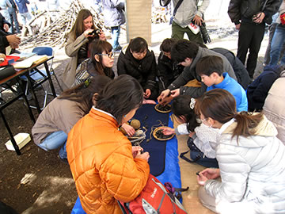 |  |
| 【黒曜石ワークショップ】 | 【アイヌワークショップ】 |
 |
|
| 【炎の前で GENZ のライブ】 | |
| （画像をクリックで拡大します） | |
このほか町田の縄文遺跡を巡るツアーなども開催され、日本列島の遙かな文化のルーツを見て、聞いて、
ふれて感じる縄文づくしの一日となりました。
=∴=∵=∴=∵=∴=∵=∴=∵=∴=∵=∴=∵=∴=∵=∴=∵=∴=∵=∴=∵=∴=∵=∴=∵=∴=∵=∴=
今年1月には東京青山のスパイラルガーデンで開催された『ARTs of JOMON 展』で現代縄文アートの新潮流
を示し、そしてこの2月の町田での縄文野焼きの実現は、縄文の古層から現代までをつらぬく縄文文化の心髄を
あきらかにする“縄文の美”の狼煙となりました。
「これは、約40年間にわたり縄文の道を邁進してきた中での、夢の実現でもありました」（猪風来）
=∴=∵=∴=∵=∴=∵=∴=∵=∴=∵=∴=∵=∴=∵=∴=∵=∴=∵=∴=∵=∴=∵=∴=∵=∴=∵=∴=
■ 問い合わせ先
（事業全般に関すること）産業労働局観光部振興課 TEL:03-5320-4768
（イベントに関すること）パシフィックコンサルタンツ株式会社 TEL:042-372-3297
| 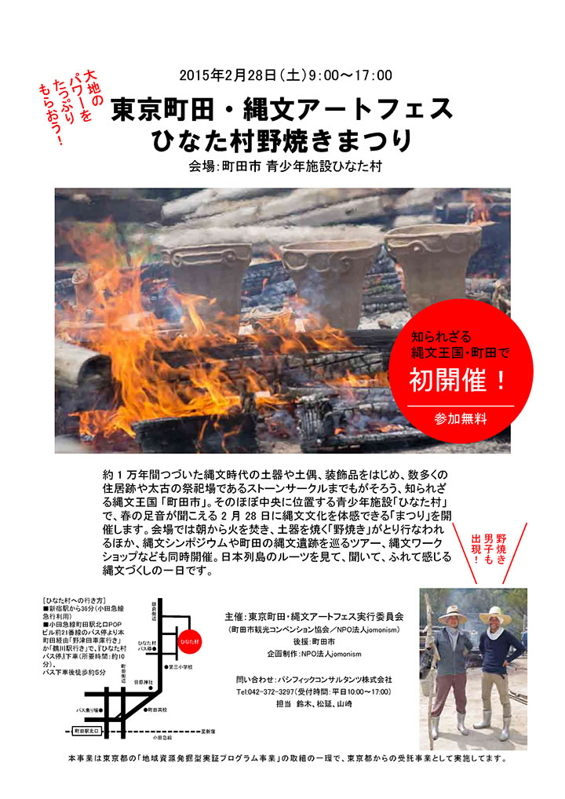 |

|
| 【東京町田・縄文アートフェスチラシ】 →PDF版を開く |

|

|
| 猪風来（土偶を制作） | 村上原野（土器づくり） |

|
ARTs of JOMON in 東京は、アーティストの皆さんの熱意と結束が大きな力となりました。
期間中の来場者数はのべ9000人に達する大盛況となりました。
参加いただいたアーティストの方々、青森県と JOMONISM、そして spiral のスタッフの皆様のご尽力に
感謝いたします。
「現代に縄文芸術の新潮流を形成する」という長年の悲願が成功しつつあることを確信できました。
これから更に力を込めてひとつひとつのステップを乗り越え、縄文スピリットから始まる新しい創造の
ビッグバンを起こすべく、広く世界へ発信してゆこうと思います。
今後、今年2月28日には東京都町田市の「ひなた村」で開催される東京縄文アートフェスタで縄文野焼き
を行います。
また8月には ARTs of JOMON 展を米国デンバー国際空港（グレイト・ホール）にて行う予定です。

|
=∴=∵=∴=∵=∴=∵=∴=∵=∴=∵=∴=∵=∴=∵=∴=∵=∴=∵=∴=∵=∴=∵=∴=∵=∴=∵=∴=
縄文アートが表参道スパイラルに集結！
2013年にニューヨークとパリ、2014年には青森県県立美術館で開催され、好評を博した縄文アートの展覧会〈ARTs of JOMON〉が新年を迎えたばかりの東京で開催。
縄文式野焼き技法の第一人者、猪風来や俳優の片桐仁ほか縄文文化に共鳴するアーティストが集結し、それぞれの手法で縄文的世界観を披露します。
出展者：猪風来／大森準平／大藪龍二郎／片桐仁／金理有／小林武人／GOMA／坂巻善徳 a.k.a sense／
篠崎裕美子／澁谷忠臣／林登志也(we+) ＋安藤北斗(we+)＋高橋昂也／竹谷隆之／堀江武史／
丸岡和吾／村上原野／結城幸司
■詳細 → ARTs of JOMON in TOKYO（公式サイト）

|
| 【ARTs of JOMON チラシ】 →PDF版を開く |


|
芸術新潮２０１４年７月号で、猪風来美術館と春の縄文野焼き祭りを取り上げた『現代の縄文土器を野で焼く
猪風来の豊饒世界』が掲載されました。
空にたちのぼる炎が縄文土器に生命を宿す、縄文の真髄である野焼き。
そこに体現される猪風来縄文スパイラルのゆたかな造形美と精神世界に迫る。
縄文野焼きの一部始終を目撃し作品が生まれ出る瞬間に立ち会った記者の綴るルポルタージュです。
文：草刈朋子 写真：廣川慶明
=∴=∵=∴=∵=∴=∵=∴=∵=∴=∵=∴=∵=∴=∵=∴=∵=∴=∵=∴=∵=∴=∵=∴=∵=∴=∵=∴=

|
縄文造形家であり縄文赤漆研究家である猪風来は、国宝である中空土偶（函館市著保内野遺跡出土）の
赤漆塗装の解明に取り組んできました。
その成果を纏めた論文【「国宝土偶」（中空土偶）の漆塗装と縄文の赤漆に関する実験考古学的研究】が、
このたび函館市の公募事業「平成25年度 縄文文化特別研究」として発表されました。
現在、函館市縄文文化交流センターの公式ページで公開されております。

|

|
国宝である中空土偶（函館市著保内野遺跡出土）には、本来黒漆と赤漆が塗装されていましたが、漆はわずか
しか残存せず、ほとんど剥がれた状態で出土しました。
この剥離した漆塗装は、あえて剥離を前提として（祭式のために）計画的に塗装されたものである、という説
が提唱されていました。
このことが「縄文土偶祭式の不思議」として、考古学的な解明が求められてきました。
また、赤漆に用いられた赤土ベンガラにも謎がありました。
縄文時代に赤土ベンガラがどのような技法で生産されていたのか、これまで多くの考古学者が再現を試み
ながらも明確な実証に至らず、課題とされてきました。
こうした“縄文の赤”の美の秘密を解明する、縄文の技法による再現がはじめて成功をおさめました。
論文では、猪風来による成果の詳細な経過と結果が纏められています。
縄文赤土ベンガラの生産実験においては、岡山県吹屋で採取された天然黄土を、縄文野焼きで1000℃焼成
することによって、高純度のベンガラ（酸化鉄(Ⅲ)・酸化第二鉄）の精製に成功。
また、生産した赤土ベンガラと生漆（備中漆）を混合した赤漆を用いた赤漆塗縄文土器の作成に成功しました。
これは、天然原料と縄文の技法を徹底した実験考古学的成果の確立となります。
中空土偶の漆塗装の計画的剥離実験においても、縄文時代に存在しうる塗装技術の追求によって、剥離状況の
再現実験に成功。
縄文人の土偶をもちいた祭式儀礼を解明する端緒を開きました。
こうした成果は、縄文時代の赤漆の「心と技」を解明する考古学上の大きな手がかりを提示するものです。